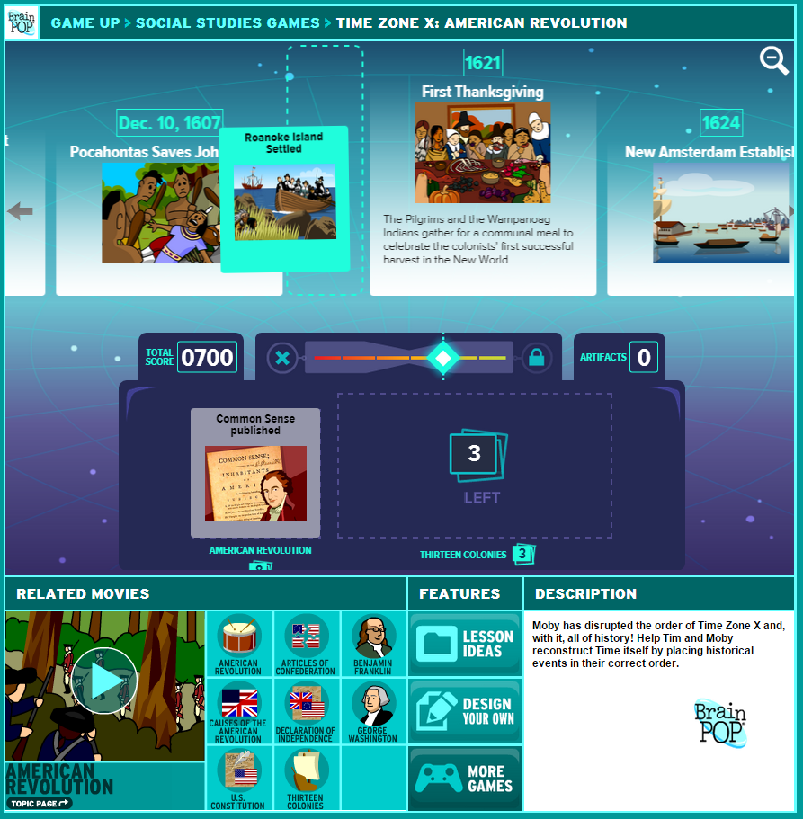
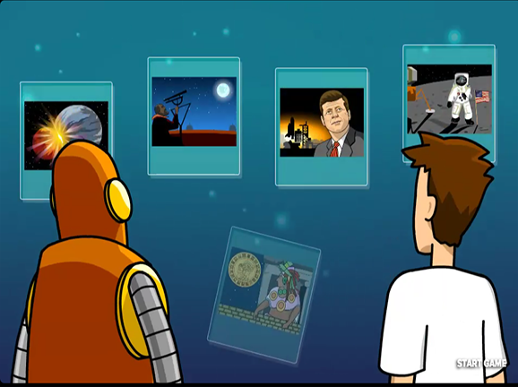

BrainPOP's Time Zone X
I designed Time Zone X and managed its production while an employee at BrainPOP. Since then, I've been working as a freelancer for BrainPOP, producing more content and working on an update for the game. Here's a link to play and below is a short paper submitted to the Games for Learning and Society Conference 11.

Time Zone X: Play and Learning
Educational games can engage students (Gee, 2007) to drive learning and intrinsic motivation (Przybylski et. al, 2012), and provide embedded assessment (Shute and Ventura, 2013). Time Zone X realizes these potentials within the broader context and learning opportunities of the popular educational website BrainPOP. With the core mechanic of sequencing events in history and content that highlights causal relationships, Time Zone X encourages contextual reasoning spanning time periods and content areas while also providing formative assessment to guide further instruction.
Game Overview
Moby has disrupted the order of Time Zone X and, with it, all of history! You must help Tim reconstruct Time itself by placing historical events in their correct order. Play begins by selecting a starting topic from the 800+ movies on BrainPOP. You receive one deck of 5–12 events related to your chosen topic and the timeline starts with one random event from the deck.
Each turn, you place an event from the top of your deck(s) into the timeline. Correctly place an event and you get a bump on your Flux Meter. Incorrectly place an event and you're told “try earlier” or “try later,” the event returns to the top of the deck, and your Flux Meter bumps down. If you get your Flux Meter to the top, then you get to choose a new and related topic deck to bring into play.
Incorrectly place 3 events in a row or run out of events and the game is over. Complete a topic deck to collect its hidden artifact. You win by completing all the topic decks on BrainPOP. This Tetris-style “endless” gameplay is designed to encourage individual goal setting and gradual improvement.
Learning Dynamics
The game appears focused on historical dates. However, the expansive range of content across topic decks and granularity of events within topics, mean it's very difficult to remember all the dates so players decipher events' relative order based on context clues and causal relationships. This dynamic promotes higher-order historical understanding through sourcing, contextualization, and corroboration, such as within the Reading Like a Historian curriculum (Reisman, 2012). Connections between events include causality in geologic events, political shifts, inventions, discoveries, etc. Players often cannot place events with absolute certainty. Instead, they must hypothesize based on available background knowledge and test these hypotheses multiple times.
The background knowledge that enables this sequencing as a problem solving exercise comes from a few different sources. First, the player must activate prior knowledge about the topic (Schwartz and Bransford, 1998). Second, players read a short event description that links related events with subtle contextual clues. These descriptions are written with a careful signal-to-noise balance, giving players practice with critical reading and picking out relevant information. The game creates a “time to tell” (i.e. preceding instruction with inquiry-based activity) for this valuable exercise in reading comprehension, a method shown to improve engagement and retention (Schwartz and Bransford, 1998). Thirdly, multiplayer games of Time Zone X lead to rich discussions between players of historical events and periods, supporting the social construction of knowledge (Kim, 2001).

References
Dede, C. (2010). Comparing Frameworks for 21st Century skills. 21st Century skills: Rethinking how students learn. J. Bellanca and R. Brandt. (Eds.) Bloomington, IN: Solution Tree Press, 51–76.
Gee, J. (2007). What video games have to teach us about learning and literacy. NY: Palgrave Macmillan.
Kim, B. (2001). Social Constructivism. M. Orey (Ed.), Emerging perspectives on learning, teaching, and technology. Retrieved February 4, 2015, from http://projects.coe.uga.edu/epltt/
Reisman, Avishag (2012) Reading Like a Historian: A Document-Based History Curriculum Intervention in Urban High Schools. Cognition and Instruction, 30(1), 86–112.
Przybylski, A. K., Weinstein, N., Murayama, K., Lynch, M. F., & Ryan, R. M. (2012). The ideal self at play the appeal of video games that let you be all you can be. Psychological Science, 23(1), 69–76.
Schwartz, D. and Bransford, J. (1998). A time for telling. Cognition and Instruction, 16(4), 475–522.
Shute, V. J. & Ventura, M. (2013). Measuring and supporting learning in games: Stealth assessment. Cambridge, MA: The MIT Press.
Acknowledgements
Thanks to the production team: Scott Price (Producer), Demian Johnson (Art Director), Jon Feldman (Editor-In-Chief), Vin Rowe (Developer), Katya Hott (User Testing Lead), Tanya Roitman (UI Designer and Content Artist), Suzy Cho (UI Designer), Mike Dawson (Content Artist), Richard Ho (Editor), Dana Burnell (Content Writer), Anne Bitzegaio (Content Writer), Yoon-Ji Kim (UX Designer), Allison Mishkin (Data Analyst), Kevin Miklasz (Assessment Specialist) and William Jordan-Cooley (Game and Instructional Designer). Special thanks to all our teacher and student playtesters in the NYC and NJ areas.